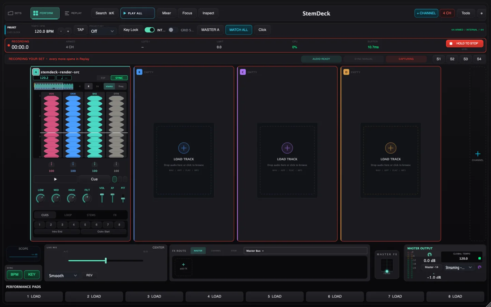

Music-aware decks
Project tempo and key, downbeat sync, draggable warp anchors, quantized loops, cues and beat jumps.
Tempo + harmonic syncA live performance instrument that records every deck, input and move—then turns the whole set into an arrangement you can edit, comp and finish.

Vertical stem controlProject BPM + key syncEvery move enters ReplayMove through a set without losing context. Prepare music, perform it, then open the exact performance in Replay.
StemDeck preserves clean sources, the audible master and the control timeline. Refine the energy of the room without rebuilding the set from scratch.
Deep enough for a finished set, direct enough to use while people are watching.
Project tempo and key, downbeat sync, draggable warp anchors, quantized loops, cues and beat jumps.
Tempo + harmonic syncSplit vocals, drums, bass and music. Mute, pitch, filter or effect one stem without leaving the deck.
Vertical stem workflowRoute effects to master, channels or individual stems. Third-party audio effects run in an isolated helper.
Automatic dry fallbackAlways-on retrospective capture saves the previous 60 seconds even when Record was never pressed.
Bounded audio historyConnect MIDI, guitar, microphone and line inputs. Load software instruments and print safety lanes.
Live inputs + MIDI mappingEvery fader, cue, effect and transport gesture returns on the same clock beside clean and printed audio.
Sample-identical intent replayAdd whole folders, preview audio, analyze BPM and key, then arrange by compatibility or readiness.
Persistent smart libraryCapture complete live states and recall them at one touch. Carry controller mappings between sessions.
Four instant scene slotsPackage state, sources, manifests, diagnostics and captures so the set can move safely between Macs.
Export Center preflightMaster, channel and stem routing use the same clear target model. The rack always tells you where the next effect will land.
“A live tool has one job before everything else: keep making sound.”StemDeck engineering principle
Join for Mac builds, controller profiles and direct artist testing.
No spam. Just build access and a direct line to the team.